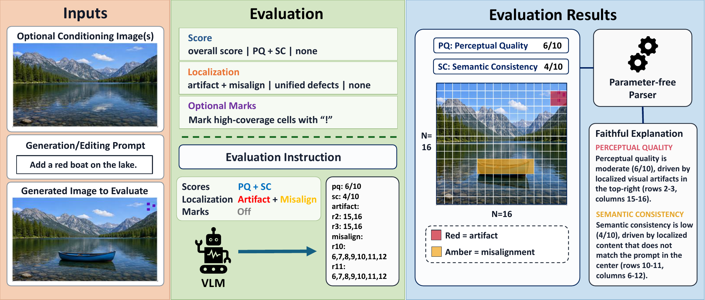
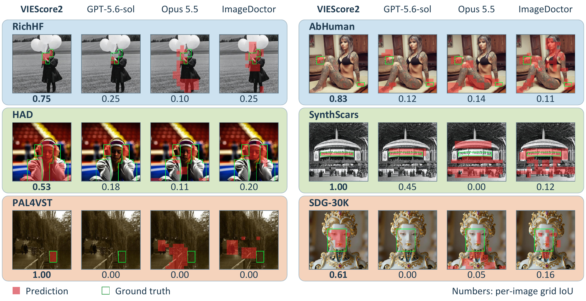

Existing synthetic image evaluators typically provide only a scalar quality score and do not identify the image regions that support it. We introduce VIEScore2, a unified evaluator for image generation and editing tasks with optional conditioning images. VIEScore2 represents an image as an N×N grid and jointly predicts quality scores and defect locations in a single model pass. Its text-native grid representation provides a common interface for heterogeneous spatial supervision and enables directly verifiable post-training objectives. We train on 38K examples spanning score-only, localization-only, and joint supervision across generation and editing tasks. Starting from supervised fine-tuning, we further apply GRPO to improve defect localization using rewards that combine cell-level Dice overlap, score accuracy, and output-format validity. A parameter-free parser converts the structured predictions into readable explanations. On the primary suite, VIEScore2 achieves an overall-score SRCC of 0.601, compared with 0.491 for Gemini-3-Flash, the strongest zero-shot general-purpose VLM baseline under matched inputs. For defect localization, VIEScore2 outperforms both general-purpose VLMs and specialized spatial evaluators on three of six benchmarks in per-image grid IoU and ranks among the top three on five, including datasets beyond its training sources.
Heterogeneous spatial supervision (masks, heatmaps) from ImagenWorld, RichHF-18K, PAL4VST and COCO, together with score-only data from EvalMuse-40K, is converted into one common training format: scores on a [0,10] scale and defect cells on an N×N grid. Qwen3-VL-8B is first trained with supervised fine-tuning, then with GRPO using a combined verifiable reward: a cell-level Dice reward, a score accuracy reward, and an output format reward. All rewards are computed from the parsed outputs without a learned reward model. At inference, a parameter-free parser turns the predicted scores and defect grid into a faithful explanation.
VIEScore2 ranks first in per-image grid IoU on RichHF (0.299), PAL4VST (0.335), and SynthScars (0.234), second on HAD, and third on AbHuman. It also leads in SynthScars F1 (0.368). The top-three IoU rankings on five benchmarks show competitive localization across training sources and additional datasets.
| Training sources | Additional datasets | |||||||||||
|---|---|---|---|---|---|---|---|---|---|---|---|---|
| RichHF | PAL4VST | AbHuman | HAD | SynthScars | SDG-30K | |||||||
| Method | IoU | F1 | IoU | F1 | IoU | F1 | IoU | F1 | IoU | F1 | IoU | F1 |
| Qwen3-VL-8B | 0.022 | 0.137 | 0.026 | 0.124 | 0.024 | 0.108 | 0.044 | 0.111 | 0.026 | 0.117 | 0.114 | 0.269 |
| GPT-5.6-terra† | 0.096 | 0.218 | 0.118 | 0.239 | 0.171 | 0.217 | 0.148 | 0.251 | 0.162 | 0.281 | 0.058 | 0.217 |
| GPT-5.6-sol† | 0.156 | 0.274 | 0.141 | 0.248 | 0.217 | 0.282 | 0.211 | 0.298 | 0.186 | 0.290 | 0.078 | 0.258 |
| Gemini-3-Flash† | 0.047 | 0.082 | 0.048 | 0.068 | 0.057 | 0.079 | 0.075 | 0.119 | 0.062 | 0.101 | 0.031 | 0.068 |
| Claude Opus 5.5† | 0.167 | 0.285 | 0.140 | 0.225 | 0.146 | 0.308 | 0.142 | 0.235 | 0.196 | 0.358 | 0.084 | 0.216 |
| PAL | 0.014 | 0.035 | 0.306 | 0.535 | 0.009 | 0.016 | 0.009 | 0.038 | 0.027 | 0.046 | 0.007 | 0.014 |
| SegFormer-b0 | 0.274 | 0.450 | 0.146 | 0.237 | 0.130 | 0.246 | 0.156 | 0.286 | 0.170 | 0.283 | 0.103 | 0.260 |
| RAHF | 0.285 | 0.474 | 0.105 | 0.169 | 0.141 | 0.260 | 0.164 | 0.281 | 0.172 | 0.294 | 0.068 | 0.164 |
| ImageDoctor | 0.284 | 0.471 | 0.100 | 0.167 | 0.144 | 0.293 | 0.158 | 0.275 | 0.169 | 0.305 | 0.086 | 0.207 |
| LEGION§ | 0.086 | 0.176 | 0.074 | 0.130 | 0.174 | 0.152 | 0.191 | 0.324 | 0.218 | 0.363 | 0.038 | 0.120 |
| SDG | 0.140 | 0.243 | 0.115 | 0.196 | 0.253 | 0.292 | 0.154 | 0.228 | 0.222 | 0.330 | 0.137 | 0.353 |
| VIEScore2 | 0.299 | 0.466 | 0.335 | 0.439 | 0.215 | 0.194 | 0.197 | 0.314 | 0.234 | 0.368 | 0.102 | 0.272 |

On the primary suite, VIEScore2 achieves the highest aggregate overall-score SRCC (0.601), followed by Gemini-3-Flash (0.491) and GPT-5.6-sol (0.437). All models receive the generated image, prompt, and available conditioning images. ImagenWorld covers text-to-image generation (TIG), text-guided editing (TIE), and generation/editing with one (SRIG/SRIE) or multiple conditioning images (MRIG/MRIE).
| Method | All | RichHF | EvalMuse | TIG | TIE | SRIG | SRIE | MRIG | MRIE |
|---|---|---|---|---|---|---|---|---|---|
| Qwen3-VL-8B judge‡ | 0.373 | 0.456 | 0.473 | 0.570 | 0.066 | 0.128 | 0.393 | 0.537 | −0.290 |
| GPT-5.6-terra† | 0.402 | 0.440 | 0.567 | 0.640 | 0.493 | 0.258 | 0.110 | 0.523 | 0.539 |
| GPT-5.6-sol† | 0.437 | 0.470 | 0.655 | 0.623 | 0.590 | 0.275 | 0.253 | 0.539 | 0.684 |
| Gemini-3-Flash† | 0.491 | 0.515 | 0.535 | 0.531 | 0.686 | 0.356 | 0.404 | 0.418 | 0.677 |
| VIEScore2 | 0.601 | 0.692 | 0.803 | 0.589 | 0.429 | 0.375 | 0.403 | 0.509 | 0.417 |
In the joint setting, VIEScore2 achieves higher localization F1, grid IoU, and PQ and SC correlations than the two baselines evaluated with the same inputs.
| Model | Grid IoU | F1 | PQ SRCC | SC SRCC |
|---|---|---|---|---|
| Qwen3-VL-8B | 0.070 | 0.273 | 0.181 | 0.352 |
| GPT-5.6-terra† | 0.112 | 0.247 | 0.357 | 0.508 |
| VIEScore2 | 0.324 | 0.506 | 0.558 | 0.564 |
Across three independent runs, GRPO improves grid IoU by 0.024–0.029 over the shared SFT checkpoint, whereas an additional SFT epoch gives 0.001. Training with the cell-level Dice reward alone raises grid IoU from 0.296 to 0.320, accounting for most of the gain; the full reward reaches 0.324 IoU and 0.506 F1 at an overall-score SRCC of 0.601.
We choose N=16: trained pixel-IoU is similar at N=12 and N=16 (0.235/0.231) and falls to 0.192 at N=32, while N=16 preserves annotations better than N=12 (model-free pixel-IoU 0.615/0.535) and its 95th-percentile target is far shorter than at N=32 (471/1,926 tokens).
Citation will be available soon.